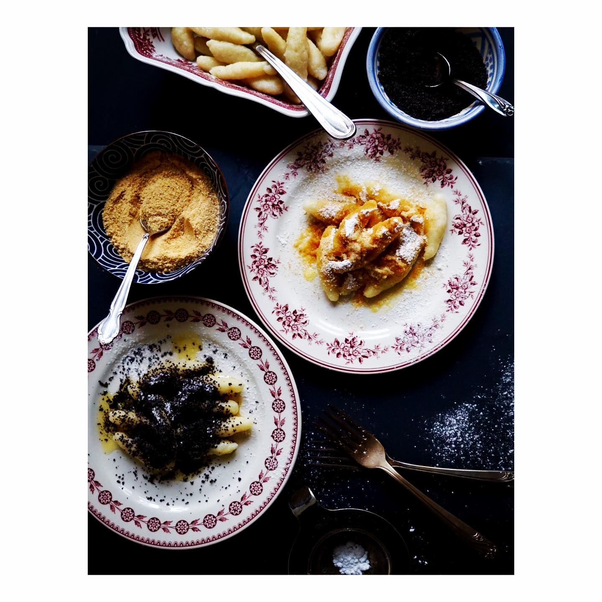

Zemiakové šúľance podľa @jana_klapac — Normy Jedál
Toto je taká sobotná klasika, dezert, ktorý máme veľmi radi❤️...len je to trochu babračka👩🏻🍳. Zemiakové šúľance s makom alebo so strúhankou.
.
.
.
#sobotnýdezert #dezert #klasika #zemiakovesulance #sulance #mak #makove #sladkejedlo #sweetfood #saturdaydessert #goodfood #homefood #poppy #mohn #vikend #coquelicot #süßesessen #weekendfood #kvetena